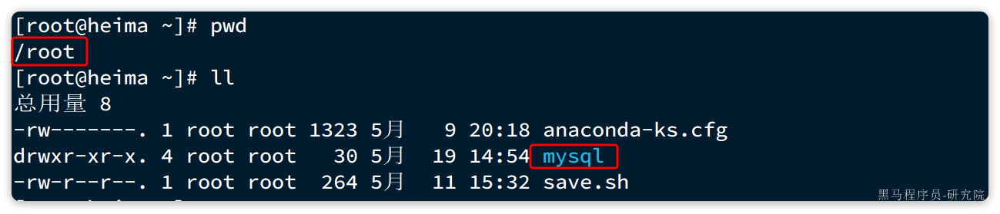
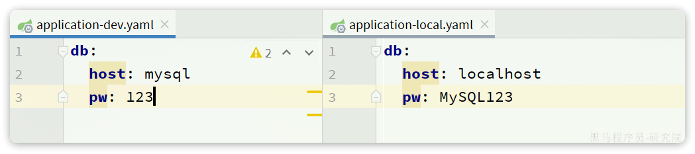
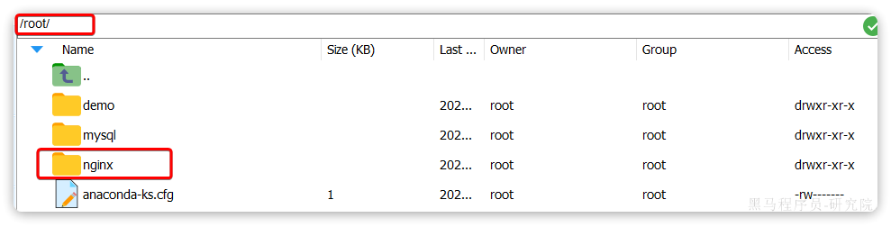

1.快速入门
环境：CentOS7虚拟机
1.1 安装 docker
1.卸载旧版
首先如果系统中已经存在旧的Docker，则先卸载：
yum remove docker \
docker-client \
docker-client-latest \
docker-common \
docker-latest \
docker-latest-logrotate \
docker-logrotate \
docker-engine2.配置Docker的yum库
首先要安装一个yum工具
yum install -y yum-utils安装成功后，执行命令，配置Docker的yum源：
yum-config-manager --add-repo https://download.docker.com/linux/centos/docker-ce.repo3.安装Docker
最后，执行命令，安装Docker
yum install -y docker-ce docker-ce-cli containerd.io docker-buildx-plugin docker-compose-plugin4.启动和校验
# 启动Docker
systemctl start docker
# 停止Docker
systemctl stop docker
# 重启
systemctl restart docker
# 设置开机自启
systemctl enable docker
# 执行docker ps命令，如果不报错，说明安装启动成功
docker ps5.配置镜像加速
这里以阿里云镜像加速为例。
5.1.注册阿里云账号
首先访问阿里云网站:
注册一个账号。
5.2.开通镜像服务
在首页的产品中，找到阿里云的容器镜像服务：

点击后进入控制台：
首次可能需要选择立刻开通，然后进入控制台。
5.3.配置镜像加速
找到镜像工具下的镜像****加速器：

页面向下滚动，即可找到配置的文档说明：

具体命令如下：
# 创建目录
mkdir -p /etc/docker
# 复制内容，注意把其中的镜像加速地址改成你自己的
tee /etc/docker/daemon.json <<-'EOF'
{
"registry-mirrors": ["https://xxxx.mirror.aliyuncs.com"]
}
EOF
# 重新加载配置
systemctl daemon-reload
# 重启Docker
systemctl restart docker1.2 部署MySQL
首先，我们利用Docker来安装一个MySQL软件，大家可以对比一下之前传统的安装方式，看看哪个效率更高一些。
如果是利用传统方式部署MySQL，大概的步骤有：
- 搜索并下载MySQL安装包
- 上传至Linux环境
- 编译和配置环境
- 安装
而使用Docker安装，仅仅需要一步即可，在命令行输入下面的命令（建议采用CV大法）：
docker run -d \
--name mysql \
-p 3306:3306 \
-e TZ=Asia/Shanghai \
-e MYSQL_ROOT_PASSWORD=123 \
mysql运行效果如图：

MySQL安装完毕！通过任意客户端工具即可连接到MySQL.
大家可以发现，当我们执行命令后，Docker做的第一件事情，是去自动搜索并下载了MySQL，然后会自动运行MySQL，我们完全不用插手，是不是非常方便。
而且，这种安装方式你完全不用考虑运行的操作系统环境，它不仅仅在CentOS系统是这样，在Ubuntu系统、macOS系统、甚至是装了WSL的Windows下，都可以使用这条命令来安装MySQL。
要知道，不同操作系统下其安装包、运行环境是都不相同的！如果是手动安装，必须手动解决安装包不同、环境不同的、配置不同的问题！
而使用Docker，这些完全不用考虑。就是因为Docker会自动搜索并下载MySQL。注意：这里下载的不是安装包，而是镜像（image）。镜像中不仅包含了MySQL本身，还包含了其运行所需要的环境、配置、系统级函数库。因此它在运行时就有自己独立的环境，就可以跨系统运行，也不需要手动再次配置环境了。这套独立运行的隔离环境我们称为容器（container）。
因此，Docker安装软件的过程，就是自动搜索下载镜像，然后创建并运行容器的过程。
Docker会根据命令中的镜像名称自动搜索并下载镜像。Docker官方提供了一个专门管理、存储镜像的网站，并对外开放了镜像上传、下载的权利。Docker官方提供了一些基础镜像，然后各大软件公司又在基础镜像基础上，制作了自家软件的镜像，全部都存放在这个网站。这个网站就成了Docker镜像交流的社区：https://hub.docker.com/
基本上我们常用的各种软件都能在这个网站上找到，我们甚至可以自己制作镜像上传上去。
像这种提供存储、管理Docker镜像的服务器，被称为DockerRegistry，可以翻译为镜像仓库。DockerHub网站是官方仓库，阿里云、华为云会提供一些第三方仓库，我们也可以自己搭建私有的镜像仓库。
官方仓库在国外，下载速度较慢，一般我们都会使用第三方仓库提供的镜像加速功能，提高下载速度。而企业内部的机密项目，往往会采用私有镜像仓库。
总之，镜像的来源有两种：
- 基于官方基础镜像自己制作
- 直接去DockerRegistry下载
总结一下：
Docker本身包含一个后台服务，我们可以利用Docker命令告诉Docker服务，帮助我们快速部署指定的应用。Docker服务部署应用时，首先要去搜索并下载应用对应的镜像，然后根据镜像创建并允许容器，应用就部署完成了。
用一幅图表示如下：
1.3 命令解读
利用Docker快速的安装了MySQL，非常的方便，不过我们执行的命令到底是什么意思呢？
docker run -d \
--name mysql \
-p 3306:3306 \
-e TZ=Asia/Shanghai \
-e MYSQL_ROOT_PASSWORD=123 \
mysql解读：
docker run -d：创建并运行一个容器，-d则是让容器以后台进程运行--name mysql: 给容器起个名字叫mysql，你可以叫别的-p 3306:3306: 设置端口映射。
- 容器是隔离环境，外界不可访问。但是可以将宿主机端口映射容器内到端口，当访问宿主机指定端口时，就是在访问容器内的端口了。
- 容器内端口往往是由容器内的进程决定，例如MySQL进程默认端口是3306，因此容器内端口一定是3306；而宿主机端口则可以任意指定，一般与容器内保持一致。
- 格式：
-p 宿主机端口:容器内端口，示例中就是将宿主机的3306映射到容器内的3306端口-e TZ=Asia/Shanghai: 配置容器内进程运行时的一些参数（环境变量）
- 格式：
-e KEY=VALUE，KEY和VALUE都由容器内进程决定- 案例中，
TZ=Asia/Shanghai是设置时区；MYSQL_ROOT_PASSWORD=123是设置MySQL默认密码mysql: 设置镜像名称，Docker会根据这个名字搜索并下载镜像
- 格式：
REPOSITORY:TAG，例如mysql:8.0，其中REPOSITORY可以理解为镜像名，TAG是版本号- 在未指定
TAG的情况下，默认是最新版本，也就是mysql:latest
镜像的名称不是随意的，而是要到DockerRegistry中寻找，镜像运行时的配置也不是随意的，要参考镜像的帮助文档，这些在DockerHub网站或者软件的官方网站中都能找到。
如果我们要安装其它软件，也可以到DockerRegistry中寻找对应的镜像名称和版本，阅读相关配置即可。
2.Docker基础
接下来，我们一起来学习Docker使用的一些基础知识，为将来部署项目打下基础。具体用法可以参考Docker官方文档：
2.1.常见命令
首先我们来学习Docker中的常见命令，可以参考官方文档：
https://docs.docker.com/engine/reference/commandline/cli/
2.1.1.命令介绍
其中，比较常见的命令有：
| 命令 | 说明 | 文档地址 |
|---|---|---|
| docker pull | 拉取镜像 | docker pull |
| docker push | 推送镜像到DockerRegistry | docker push |
| docker images | 查看本地镜像 | docker images |
| docker rmi | 删除本地镜像 | docker rmi |
| docker run | 创建并运行容器（不能重复创建） | docker run |
| docker stop | 停止指定容器 | docker stop |
| docker start | 启动指定容器 | docker start |
| docker restart | 重新启动容器 | docker restart |
| docker rm | 删除指定容器 | docs.docker.com |
| docker ps [-a] | 查看容器 [所有] | docker ps |
| docker logs | 查看容器运行日志 | docker logs |
| docker exec | 进入容器 | docker exec |
| docker save | 保存镜像到本地压缩文件 | docker save |
| docker load | 加载本地压缩文件到镜像 | docker load |
| docker inspect | 查看容器详细信息 | docker inspect |
用一副图来表示这些命令的关系：
补充：
默认情况下，每次重启虚拟机我们都需要手动启动Docker和Docker中的容器。通过命令可以实现开机自启：
# Docker开机自启
systemctl enable docker
# Docker容器开机自启
docker update --restart=always [容器名/容器id]2.1.2.演示
教学环节说明：我们以Nginx为例给大家演示上述命令。
# 第1步，去DockerHub查看nginx镜像仓库及相关信息
# 第2步，拉取Nginx镜像
docker pull nginx
# 第3步，查看镜像
docker images
# 结果如下：
REPOSITORY TAG IMAGE ID CREATED SIZE
nginx latest 605c77e624dd 16 months ago 141MB
mysql latest 3218b38490ce 17 months ago 516MB
# 第4步，创建并允许Nginx容器
docker run -d --name nginx -p 80:80 nginx
# 第5步，查看运行中容器
docker ps
# 也可以加格式化方式访问，格式会更加清爽
docker ps --format "table {{.ID}}\t{{.Image}}\t{{.Ports}}\t{{.Status}}\t{{.Names}}"
# 第6步，访问网页，地址：http://虚拟机地址
# 第7步，停止容器
docker stop nginx
# 第8步，查看所有容器
docker ps -a --format "table {{.ID}}\t{{.Image}}\t{{.Ports}}\t{{.Status}}\t{{.Names}}"
# 第9步，再次启动nginx容器
docker start nginx
# 第10步，再次查看容器
docker ps --format "table {{.ID}}\t{{.Image}}\t{{.Ports}}\t{{.Status}}\t{{.Names}}"
# 第11步，查看容器详细信息
docker inspect nginx
# 第12步，进入容器,查看容器内目录
docker exec -it nginx bash
# 或者，可以进入MySQL
docker exec -it mysql mysql -uroot -p
# 第13步，删除容器
docker rm nginx
# 发现无法删除，因为容器运行中，强制删除容器
docker rm -f nginxdocker save -o nginx.tar nginx:latest
docker load -i nginx.tar2.1.3.命令别名
给常用Docker命令起别名，方便我们访问：
# 修改/root/.bashrc文件
vi /root/.bashrc
内容如下：
# .bashrc
# User specific aliases and functions
alias rm='rm -i'
alias cp='cp -i'
alias mv='mv -i'
alias dps='docker ps --format "table {{.ID}}\t{{.Image}}\t{{.Ports}}\t{{.Status}}\t{{.Names}}"'
alias dis='docker images'
# Source global definitions
if [ -f /etc/bashrc ]; then
. /etc/bashrc
fi然后，执行命令使别名生效
source /root/.bashrc接下来，试试看新的命令吧。
2.2.数据卷
容器是隔离环境，容器内程序的文件、配置、运行时产生的容器都在容器内部，我们要读写容器内的文件非常不方便（未安装vim命令的依赖包）。大家思考几个问题：
- 如果要升级MySQL版本，需要销毁旧容器，那么数据岂不是跟着被销毁了？
- MySQL、Nginx容器运行后，如果我要修改其中的某些配置该怎么办？
- 我想要让Nginx代理我的静态资源怎么办？
因此，容器提供程序的运行环境，但是程序运行产生的数据、程序运行依赖的配置都应该与容器解耦。
2.2.1.什么是数据卷
数据卷（volume）是一个虚拟目录，是容器内目录与宿主机目录之间映射的桥梁。
以Nginx为例，我们知道Nginx中有两个关键的目录：
html：放置一些静态资源conf：放置配置文件
如果我们要让Nginx代理我们的静态资源，最好是放到html目录；如果我们要修改Nginx的配置，最好是找到conf下的nginx.conf文件。
但遗憾的是，容器运行的Nginx所有的文件都在容器内部。所以我们必须利用数据卷将两个目录与宿主机目录关联，方便我们操作。如图：
在上图中：
- 我们创建了两个数据卷：
conf、html - Nginx容器内部的
conf目录和html目录分别与两个数据卷关联。 - 而数据卷conf和html分别指向了宿主机的
/var/lib/docker/volumes/conf/_data目录和/var/lib/docker/volumes/html/_data目录
这样以来，容器内的conf和html目录就 与宿主机的conf和html目录关联起来，我们称为挂载。此时，我们操作宿主机的/var/lib/docker/volumes/html/_data就是在操作容器内的/usr/share/nginx/html/_data目录。只要我们将静态资源放入宿主机对应目录，就可以被Nginx代理了。
小提示：
/var/lib/docker/volumes这个目录就是默认的存放所有容器数据卷的目录，其下再根据数据卷名称创建新目录，格式为/数据卷名/_data。
为什么不让容器目录直接指向宿主机目录呢？
- 因为直接指向宿主机目录就与宿主机强耦合了，如果切换了环境，宿主机目录就可能发生改变了。由于容器一旦创建，目录挂载就无法修改，这样容器就无法正常工作了。
- 但是容器指向数据卷，一个逻辑名称，而数据卷再指向宿主机目录，就不存在强耦合。如果宿主机目录发生改变，只要改变数据卷与宿主机目录之间的映射关系即可。
不过，我们通过由于数据卷目录比较深，不好寻找，通常我们也允许让容器直接与宿主机目录挂载而不使用数据卷，具体参考2.2.3小节。
2.2.2.数据卷命令
数据卷的相关命令有：
| 命令 | 说明 | 文档地址 |
|---|---|---|
| docker volume create | 创建数据卷 | docker volume create |
| docker volume ls | 查看所有数据卷 | docs.docker.com |
| docker volume rm | 删除指定数据卷 | docs.docker.com |
| docker volume inspect | 查看某个数据卷的详情 | docs.docker.com |
| docker volume prune | 清除数据卷 | docker volume prune |
注意：容器与数据卷的挂载要在创建容器时配置，对于创建好的容器，是不能设置数据卷的。而且创建容器的过程中，数据卷会自动创建。
教学演示环节：演示一下nginx的html目录挂载
# 1.首先创建容器并指定数据卷，注意通过 -v 参数来指定数据卷
docker run -d --name nginx -p 80:80 -v html:/usr/share/nginx/html nginx
# 2.然后查看数据卷
docker volume ls
# 结果
DRIVER VOLUME NAME
local 29524ff09715d3688eae3f99803a2796558dbd00ca584a25a4bbc193ca82459f
local html
# 3.查看数据卷详情
docker volume inspect html
# 结果
[
{
"CreatedAt": "2024-05-17T19:57:08+08:00",
"Driver": "local",
"Labels": null,
"Mountpoint": "/var/lib/docker/volumes/html/_data",
"Name": "html",
"Options": null,
"Scope": "local"
}
]
# 4.查看/var/lib/docker/volumes/html/_data目录
ll /var/lib/docker/volumes/html/_data
# 可以看到与nginx的html目录内容一样，结果如下：
总用量 8
-rw-r--r--. 1 root root 497 12月 28 2021 50x.html
-rw-r--r--. 1 root root 615 12月 28 2021 index.html
# 5.进入该目录，并随意修改index.html内容
cd /var/lib/docker/volumes/html/_data
vi index.html
# 6.打开页面，查看效果
# 7.进入容器内部，查看/usr/share/nginx/html目录内的文件是否变化
docker exec -it nginx bash教学演示环节：演示一下MySQL的匿名数据卷
# 1.查看MySQL容器详细信息
docker inspect mysql
# 关注其中.Config.Volumes部分和.Mounts部分我们关注两部分内容，第一是.Config.Volumes部分：
{
"Config": {
// ... 略
"Volumes": {
"/var/lib/mysql": {}
}
// ... 略
}
}可以发现这个容器声明了一个本地目录，需要挂载数据卷，但是数据卷未定义。这就是匿名卷。
然后，我们再看结果中的.Mounts部分：
{
"Mounts": [
{
"Type": "volume",
"Name": "29524ff09715d3688eae3f99803a2796558dbd00ca584a25a4bbc193ca82459f",
"Source": "/var/lib/docker/volumes/29524ff09715d3688eae3f99803a2796558dbd00ca584a25a4bbc193ca82459f/_data",
"Destination": "/var/lib/mysql",
"Driver": "local",
}
]
}可以发现，其中有几个关键属性：
- Name：数据卷名称。由于定义容器未设置容器名，这里的就是匿名卷自动生成的名字，一串hash值。
- Source：宿主机目录
- Destination : 容器内的目录
上述配置是将容器内的/var/lib/mysql这个目录，与数据卷29524ff09715d3688eae3f99803a2796558dbd00ca584a25a4bbc193ca82459f挂载。于是在宿主机中就有了/var/lib/docker/volumes/29524ff09715d3688eae3f99803a2796558dbd00ca584a25a4bbc193ca82459f/_data这个目录。这就是匿名数据卷对应的目录，其使用方式与普通数据卷没有差别。
接下来，可以查看该目录下的MySQL的data文件：
ls -l /var/lib/docker/volumes/29524ff09715d3688eae3f99803a2796558dbd00ca584a25a4bbc193ca82459f/_data注意：每一个不同的镜像，将来创建容器后内部有哪些目录可以挂载，可以参考DockerHub对应的页面
2.2.3.挂载本地目录或文件
可以发现，数据卷的目录结构较深，如果我们去操作数据卷目录会不太方便。在很多情况下，我们会直接将容器目录与宿主机指定目录挂载。挂载语法与数据卷类似：
# 挂载本地目录
-v 本地目录:容器内目录
# 挂载本地文件
-v 本地文件:容器内文件注意：本地目录或文件必须以 / 或 ./开头，如果直接以名字开头，会被识别为数据卷名而非本地目录名。
例如：
-v mysql:/var/lib/mysql # 会被识别为一个数据卷叫mysql，运行时会自动创建这个数据卷
-v ./mysql:/var/lib/mysql # 会被识别为当前目录下的mysql目录，运行时如果不存在会创建目录教学演示，删除并重新创建mysql容器，并完成本地目录挂载：
- 挂载
/root/mysql/data到容器内的/var/lib/mysql目录 - 挂载
/root/mysql/init到容器内的/docker-entrypoint-initdb.d目录（初始化的SQL脚本目录） - 挂载
/root/mysql/conf到容器内的/etc/mysql/conf.d目录（这个是MySQL配置文件目录）
在课前资料中已经准备好了mysql的init目录和conf目录：

以及对应的初始化SQL脚本和配置文件：


其中，hm.cnf主要是配置了MySQL的默认编码，改为utf8mb4；而hmall.sql则是后面我们要用到的黑马商城项目的初始化SQL脚本。
我们直接将整个mysql目录上传至虚拟机的/root目录下：

接下来，我们演示本地目录挂载：
# 1.删除原来的MySQL容器
docker rm -f mysql
# 2.进入root目录
cd ~
# 3.创建并运行新mysql容器，挂载本地目录
docker run -d \
--name mysql \
-p 3306:3306 \
-e TZ=Asia/Shanghai \
-e MYSQL_ROOT_PASSWORD=123 \
-v ./mysql/data:/var/lib/mysql \
-v ./mysql/conf:/etc/mysql/conf.d \
-v ./mysql/init:/docker-entrypoint-initdb.d \
mysql
# 4.查看root目录，可以发现~/mysql/data目录已经自动创建好了
ls -l mysql
# 结果：
总用量 4
drwxr-xr-x. 2 root root 20 5月 19 15:11 conf
drwxr-xr-x. 7 polkitd root 4096 5月 19 15:11 data
drwxr-xr-x. 2 root root 23 5月 19 15:11 init
# 查看data目录，会发现里面有大量数据库数据，说明数据库完成了初始化
ls -l data
# 5.查看MySQL容器内数据
# 5.1.进入MySQL
docker exec -it mysql mysql -uroot -p123
# 5.2.查看编码表
show variables like "%char%";
# 5.3.结果，发现编码是utf8mb4没有问题
+--------------------------+--------------------------------+
| Variable_name | Value |
+--------------------------+--------------------------------+
| character_set_client | utf8mb4 |
| character_set_connection | utf8mb4 |
| character_set_database | utf8mb4 |
| character_set_filesystem | binary |
| character_set_results | utf8mb4 |
| character_set_server | utf8mb4 |
| character_set_system | utf8mb3 |
| character_sets_dir | /usr/share/mysql-8.0/charsets/ |
+--------------------------+--------------------------------+
# 6.查看数据
# 6.1.查看数据库
show databases;
# 结果，hmall是黑马商城数据库
+--------------------+
| Database |
+--------------------+
| hmall |
| information_schema |
| mysql |
| performance_schema |
| sys |
+--------------------+
5 rows in set (0.00 sec)
# 6.2.切换到hmall数据库
use hmall;
# 6.3.查看表
show tables;
# 结果：
+-----------------+
| Tables_in_hmall |
+-----------------+
| address |
| cart |
| item |
| order |
| order_detail |
| order_logistics |
| pay_order |
| user |
+-----------------+
# 6.4.查看address表数据
+----+---------+----------+--------+----------+-------------+---------------+-----------+------------+-------+
| id | user_id | province | city | town | mobile | street | contact | is_default | notes |
+----+---------+----------+--------+----------+-------------+---------------+-----------+------------+-------+
| 59 | 1 | 北京 | 北京 | 朝阳区 | 13900112222 | 金燕龙办公楼 | 李佳诚 | 0 | NULL |
| 60 | 1 | 北京 | 北京 | 朝阳区 | 13700221122 | 修正大厦 | 李佳红 | 0 | NULL |
| 61 | 1 | 上海 | 上海 | 浦东新区 | 13301212233 | 航头镇航头路 | 李佳星 | 1 | NULL |
| 63 | 1 | 广东 | 佛山 | 永春 | 13301212233 | 永春武馆 | 李晓龙 | 0 | NULL |
+----+---------+----------+--------+----------+-------------+---------------+-----------+------------+-------+
4 rows in set (0.00 sec)2.3.镜像
前面我们一直在使用别人准备好的镜像，那如果我要部署一个Java项目，把它打包为一个镜像该怎么做呢？
2.3.1.镜像结构
要想自己构建镜像，必须先了解镜像的结构。
之前我们说过，镜像之所以能让我们快速跨操作系统部署应用而忽略其运行环境、配置，就是因为镜像中包含了程序运行需要的系统函数库、环境、配置、依赖。
因此，自定义镜像本质就是依次准备好程序运行的基础环境、依赖、应用本身、运行配置等文件，并且打包而成。
举个例子，我们要从0部署一个Java应用，大概流程是这样：
- 准备一个linux服务（CentOS或者Ubuntu均可）
- 安装并配置JDK
- 上传Jar包
- 运行jar包
那因此，我们打包镜像也是分成这么几步：
- 准备Linux运行环境（java项目并不需要完整的操作系统，仅仅是基础运行环境即可）
- 安装并配置JDK
- 拷贝jar包
- 配置启动脚本
上述步骤中的每一次操作其实都是在生产一些文件（系统运行环境、函数库、配置最终都是磁盘文件），所以镜像就是一堆文件的集合。
但需要注意的是，镜像文件不是随意堆放的，而是按照操作的步骤分层叠加而成，每一层形成的文件都会单独打包并标记一个唯一id，称为Layer（层）。这样，如果我们构建时用到的某些层其他人已经制作过，就可以直接拷贝使用这些层，而不用重复制作。
例如，第一步中需要的Linux运行环境，通用性就很强，所以Docker官方就制作了这样的只包含Linux运行环境的镜像。我们在制作java镜像时，就无需重复制作，直接使用Docker官方提供的CentOS或Ubuntu镜像作为基础镜像。然后再搭建其它层即可，这样逐层搭建，最终整个Java项目的镜像结构如图所示：

2.3.2.Dockerfile
由于制作镜像的过程中，需要逐层处理和打包，比较复杂，所以Docker就提供了自动打包镜像的功能。我们只需要将打包的过程，每一层要做的事情用固定的语法写下来，交给Docker去执行即可。
而这种记录镜像结构的文件就称为Dockerfile，其对应的语法可以参考官方文档：
https://docs.docker.com/engine/reference/builder/
其中的语法比较多，比较常用的有：
| 指令 | 说明 | 示例 |
|---|---|---|
| FROM | 指定基础镜像 | FROM centos:6 |
| ENV | 设置环境变量，可在后面指令使用 | ENV key value |
| COPY | 拷贝本地文件到镜像的指定目录 | COPY ./xx.jar /tmp/app.jar |
| RUN | 执行Linux的shell命令，一般是安装过程的命令 | RUN yum install gcc |
| EXPOSE | 指定容器运行时监听的端口，是给镜像使用者看的 | EXPOSE 8080 |
| ENTRYPOINT | 镜像中应用的启动命令，容器运行时调用 | ENTRYPOINT java -jar xx.jar |
例如，要基于Ubuntu镜像来构建一个Java应用，其Dockerfile内容如下：
# 指定基础镜像
FROM ubuntu:16.04
# 配置环境变量，JDK的安装目录、容器内时区
ENV JAVA_DIR=/usr/local
ENV TZ=Asia/Shanghai
# 拷贝jdk和java项目的包
COPY ./jdk8.tar.gz $JAVA_DIR/
COPY ./docker-demo.jar /tmp/app.jar
# 设定时区
RUN ln -snf /usr/share/zoneinfo/$TZ /etc/localtime && echo $TZ > /etc/timezone
# 安装JDK
RUN cd $JAVA_DIR \
&& tar -xf ./jdk8.tar.gz \
&& mv ./jdk1.8.0_144 ./java8
# 配置环境变量
ENV JAVA_HOME=$JAVA_DIR/java8
ENV PATH=$PATH:$JAVA_HOME/bin
# 指定项目监听的端口
EXPOSE 8080
# 入口，java项目的启动命令
ENTRYPOINT ["java", "-jar", "/app.jar"]同学们思考一下：以后我们会有很多很多java项目需要打包为镜像，他们都需要Linux系统环境、JDK环境这两层，只有上面的3层不同（因为jar包不同）。如果每次制作java镜像都重复制作前两层镜像，是不是很麻烦。
所以，就有人提供了基础的系统加JDK环境，我们在此基础上制作java镜像，就可以省去JDK的配置了：
# 基础镜像
FROM openjdk:11.0-jre-buster
# 设定时区
ENV TZ=Asia/Shanghai
RUN ln -snf /usr/share/zoneinfo/$TZ /etc/localtime && echo $TZ > /etc/timezone
# 拷贝jar包
COPY docker-demo.jar /app.jar
# 入口
ENTRYPOINT ["java", "-jar", "/app.jar"]是不是简单多了。
2.3.3.构建镜像
当Dockerfile文件写好以后，就可以利用命令来构建镜像了。
在课前资料中，我们准备好了一个demo项目及对应的Dockerfile：

首先，我们将课前资料提供的docker-demo.jar包以及Dockerfile拷贝到虚拟机的/root/demo目录：

然后，执行命令，构建镜像：
# 进入镜像目录
cd /root/demo
# 开始构建
docker build -t docker-demo:1.0 .命令说明：
docker build: 就是构建一个docker镜像-t docker-demo:1.0：-t参数是指定镜像的名称（repository和tag）.: 最后的点是指构建时Dockerfile所在路径，由于我们进入了demo目录，所以指定的是.代表当前目录，也可以直接指定Dockerfile目录：# 直接指定Dockerfile目录 docker build -t docker-demo:1.0 /root/demo结果：  查看镜像列表： ```Bash # 查看镜像列表： docker images # 结果 REPOSITORY TAG IMAGE ID CREATED SIZE docker-demo 1.0 d6ab0b9e64b9 27 minutes ago 327MB nginx latest 605c77e624dd 16 months ago 141MB mysql latest 3218b38490ce 17 months ago 516MB
然后尝试运行该镜像：
# 1.创建并运行容器
docker run -d --name dd -p 8090:8090 docker-demo:1.0
# 2.查看容器
dps
# 结果
CONTAINER ID IMAGE PORTS STATUS NAMES
78a000447b49 docker-demo:1.0 0.0.0.0:8080->8080/tcp, :::8090->8090/tcp Up 2 seconds dd
f63cfead8502 mysql 0.0.0.0:3306->3306/tcp, :::3306->3306/tcp, 33060/tcp Up 2 hours mysql
# 3.访问
curl localhost:8080/hello/count
# 结果：
<h5>欢迎访问黑马商城, 这是您第1次访问<h5>2.4.网络
上节课我们创建了一个Java项目的容器，而Java项目往往需要访问其它各种中间件，例如MySQL、Redis等。现在，我们的容器之间能否互相访问呢？我们来测试一下
首先，我们查看下MySQL容器的详细信息，重点关注其中的网络IP地址：
# 1.用基本命令，寻找Networks.bridge.IPAddress属性
docker inspect mysql
# 也可以使用format过滤结果
docker inspect --format='{{range .NetworkSettings.Networks}}{{println .IPAddress}}{{end}}' mysql
# 得到部分IP信息如下：
"Networks": {
"bridge": {
"IPAMConfig": null,
"Links": null,
"Aliases": null,
"NetworkID": "33787636152bc86a6695dac109d440f48923ffc018aa9bcbee77aa12c39136e5",
"EndpointID": "2e63b7003705e11acd9435f8b5364fc1fe666c999d110252430cab767bbea66f",
"Gateway": "172.17.0.1", #默认网关
"IPAddress": "172.17.0.2", #IP地址
"IPPrefixLen": 16,
"IPv6Gateway": "",
"GlobalIPv6Address": "",
"GlobalIPv6PrefixLen": 0,
"MacAddress": "02:42:ac:11:00:02",
"DriverOpts": null
}
}
# 2.然后通过命令进入dd容器
docker exec -it dd bash
# 3.在容器内，通过ping命令测试网络
ping 172.17.0.2
# 结果
PING 172.17.0.2 (172.17.0.2) 56(84) bytes of data.
64 bytes from 172.17.0.2: icmp_seq=1 ttl=64 time=0.053 ms
64 bytes from 172.17.0.2: icmp_seq=2 ttl=64 time=0.059 ms
64 bytes from 172.17.0.2: icmp_seq=3 ttl=64 time=0.058 ms发现可以互联，没有问题。
但是，容器的网络IP其实是一个虚拟的IP，其值并不固定与某一个容器绑定，如果我们在开发时写死某个IP，而在部署时很可能MySQL容器的IP会发生变化，连接会失败。
所以，我们必须借助于docker的网络功能来解决这个问题，官方文档：
https://docs.docker.com/engine/reference/commandline/network/
常见命令有：
| 命令 | 说明 | 文档地址 |
|---|---|---|
| docker network create | 创建一个网络 | docker network create |
| docker network ls | 查看所有网络 | docs.docker.com |
| docker network rm | 删除指定网络 | docs.docker.com |
| docker network prune | 清除未使用的网络 | docs.docker.com |
| docker network connect | 使指定容器连接加入某网络 | docs.docker.com |
| docker network disconnect | 使指定容器连接离开某网络 | docker network disconnect |
| docker network inspect | 查看网络详细信息 | docker network inspect |
自定义网络
# 1.首先通过命令创建一个网络
docker network create hmall
# 2.然后查看网络
docker network ls
# 结果：
NETWORK ID NAME DRIVER SCOPE
639bc44d0a87 bridge bridge local
403f16ec62a2 hmall bridge local
0dc0f72a0fbb host host local
cd8d3e8df47b none null local
# 其中，除了hmall以外，其它都是默认的网络
# 3.让dd和mysql都加入该网络，注意，在加入网络时可以通过--alias给容器起别名
# 这样该网络内的其它容器可以用别名互相访问！
# 3.1.mysql容器，指定别名为db，另外每一个容器都有一个别名是容器名
docker network connect hmall mysql --alias db
# 3.2.dd容器，也就是我们的java项目
docker network connect hmall dd
# 4.进入dd容器，尝试利用别名访问db
# 4.1.进入容器
docker exec -it dd bash
# 4.2.用db别名访问
ping db
# 结果
PING db (172.18.0.2) 56(84) bytes of data.
64 bytes from mysql.hmall (172.18.0.2): icmp_seq=1 ttl=64 time=0.070 ms
64 bytes from mysql.hmall (172.18.0.2): icmp_seq=2 ttl=64 time=0.056 ms
# 4.3.用容器名访问
ping mysql
# 结果：
PING mysql (172.18.0.2) 56(84) bytes of data.
64 bytes from mysql.hmall (172.18.0.2): icmp_seq=1 ttl=64 time=0.044 ms
64 bytes from mysql.hmall (172.18.0.2): icmp_seq=2 ttl=64 time=0.054 msOK，现在无需记住IP地址也可以实现容器互联（==使用容器名或别名==）了。
总结：
- 在自定义网络中，可以给容器起多个别名，默认的别名是容器名本身
- 在同一个自定义网络中的容器，可以通过别名互相访问
3.项目部署
好了，我们已经熟悉了Docker的基本用法，接下来可以尝试部署项目了。
在课前资料中已经提供了一个黑马商城项目给大家，如图：
项目说明：
- hmall：商城的后端代码
- hmall-portal：商城用户端的前端代码
- hmall-admin：商城管理端的前端代码
部署的容器及端口说明：
| 项目 | 容器名 | 端口 | 备注 |
|---|---|---|---|
| hmall | hmall | 8080 | 黑马商城后端API入口 |
| hmall-portal | nginx | 18080 | 黑马商城用户端入口 |
| hmall-admin | 18081 | 黑马商城管理端入口 | |
| mysql | mysql | 3306 | 数据库 |
在正式部署前，我们先删除之前的nginx、dd两个容器：
docker rm -f nginx ddmysql容器中已经准备好了商城的数据，所以就不再删除了。
3.1.部署Java项目
hmall项目是一个maven聚合项目，使用IDEA打开hmall项目，查看项目结构如图：
我们要部署的就是其中的hm-service，其中的配置文件采用了多环境的方式：

其中的application-dev.yaml是部署到开发环境的配置，application-local.yaml是本地运行时的配置。
查看application.yaml，你会发现其中的JDBC地址并未写死，而是读取变量：

这两个变量在application-dev.yaml和application-local.yaml中并不相同：

在dev开发环境（也就是Docker部署时）采用了mysql作为地址，刚好是我们的mysql容器名，只要两者在一个网络，就一定能互相访问。
我们将项目打包：

结果：

将hm-service目录下的Dockerfile和hm-service/target目录下的hm-service.jar一起上传到虚拟机的root目录：
部署项目：
# 1.构建项目镜像，不指定tag，则默认为latest
docker build -t hmall .
# 2.查看镜像
docker images
# 结果
REPOSITORY TAG IMAGE ID CREATED SIZE
hmall latest 0bb07b2c34b9 43 seconds ago 362MB
docker-demo 1.0 49743484da68 24 hours ago 327MB
nginx latest 605c77e624dd 16 months ago 141MB
mysql latest 3218b38490ce 17 months ago 516MB
# 3.创建并运行容器，并通过--network将其加入hmall网络，这样才能通过容器名访问mysql
docker run -d --name hmall --network hmall -p 8080:8080 hmall测试，通过浏览器访问：http://你的虚拟机地址:8080/search/list
3.2.部署前端
hmall-portal和hmall-admin是前端代码，需要基于nginx部署。在课前资料中已经给大家提供了nginx的部署目录：

其中：
html是静态资源目录，我们需要把hmall-portal以及hmall-admin都复制进去nginx.conf是nginx的配置文件，主要是完成对html下的两个静态资源目录做代理
我们现在要做的就是把整个nginx目录上传到虚拟机的/root目录下：

然后创建nginx容器并完成两个挂载：
- 把
/root/nginx/nginx.conf挂载到/etc/nginx/nginx.conf - 把
/root/nginx/html挂载到/usr/share/nginx/html
由于需要让nginx同时代理hmall-portal和hmall-admin两套前端资源，因此我们需要暴露两个端口：
- 18080：对应hmall-portal
- 18081：对应hmall-admin
命令如下：
docker run -d \
--name nginx \
-p 18080:18080 \
-p 18081:18081 \
-v /root/nginx/html:/usr/share/nginx/html \
-v /root/nginx/nginx.conf:/etc/nginx/nginx.conf \
--network hmall \
nginx测试，通过浏览器访问：http://你的虚拟机ip:18080
3.3.DockerCompose
大家可以看到，我们部署一个简单的java项目，其中包含3个容器：
- MySQL
- Nginx
- Java项目
而稍微复杂的项目，其中还会有各种各样的其它中间件，需要部署的东西远不止3个。如果还像之前那样手动的逐一部署，就太麻烦了。
而Docker Compose就可以帮助我们实现多个相互关联的Docker容器的快速部署。它允许用户通过一个单独的 docker-compose.yml 模板文件（YAML 格式）来定义一组相关联的应用容器。
3.3.1.基本语法
docker-compose.yml文件的基本语法可以参考官方文档：
https://docs.docker.com/compose/compose-file/compose-file-v3/
docker-compose文件中可以定义多个相互关联的应用容器，每一个应用容器被称为一个服务（service）。由于service就是在定义某个应用的运行时参数，因此与docker run参数非常相似。
举例来说，用docker run部署MySQL的命令如下：
docker run -d \
--name mysql \
-p 3306:3306 \
-e TZ=Asia/Shanghai \
-e MYSQL_ROOT_PASSWORD=123 \
-v ./mysql/data:/var/lib/mysql \
-v ./mysql/conf:/etc/mysql/conf.d \
-v ./mysql/init:/docker-entrypoint-initdb.d \
--network hmall
mysql如果用docker-compose.yml文件来定义，就是这样：
version: "3.8"
services:
mysql:
image: mysql
container_name: mysql
ports:
- "3306:3306"
environment:
TZ: Asia/Shanghai
MYSQL_ROOT_PASSWORD: 123
volumes:
- "./mysql/conf:/etc/mysql/conf.d"
- "./mysql/data:/var/lib/mysql"
networks:
- new
networks:
new:
name: hmall对比如下：
| docker run 参数 | docker compose 指令 | 说明 |
|---|---|---|
| –name | container_name | 容器名称 |
| -p | ports | 端口映射 |
| -e | environment | 环境变量 |
| -v | volumes | 数据卷配置 |
| –network | networks | 网络 |
明白了其中的对应关系，相信编写docker-compose文件应该难不倒大家。
黑马商城部署文件：
version: "3.8"
services:
mysql:
image: mysql
container_name: mysql
ports:
- "3306:3306"
environment:
TZ: Asia/Shanghai
MYSQL_ROOT_PASSWORD: 123
volumes:
- "./mysql/conf:/etc/mysql/conf.d"
- "./mysql/data:/var/lib/mysql"
- "./mysql/init:/docker-entrypoint-initdb.d"
networks:
- hm-net
hmall:
build:
context: .
dockerfile: Dockerfile
container_name: hmall
ports:
- "8080:8080"
networks:
- hm-net
depends_on: #表明hmall依赖mysql，创建时会先创建mysql后创建hmall
- mysql
nginx:
image: nginx
container_name: nginx
ports:
- "18080:18080"
- "18081:18081"
volumes:
- "./nginx/nginx.conf:/etc/nginx/nginx.conf"
- "./nginx/html:/usr/share/nginx/html"
depends_on:
- hmall
networks:
- hm-net
networks:
hm-net:
name: hmall #此时会自动创建网络3.3.2.基础命令
编写好docker-compose.yml文件，就可以部署项目了。常见的命令：
https://docs.docker.com/compose/reference/
基本语法如下：
docker compose [OPTIONS] [COMMAND]其中，OPTIONS和COMMAND都是可选参数，比较常见的有：
| 类型 | 参数或指令 | 说明 |
|---|---|---|
| Options | -f | 指定compose文件的路径和名称 |
| -p | 指定project名称。project就是当前compose文件中设置的多个service的集合，是逻辑概念 | |
| Commands | up | 创建并启动所有service容器 |
| down | 停止并移除所有容器、网络 | |
| ps | 列出所有启动的容器 | |
| logs | 查看指定容器的日志 | |
| stop | 停止容器 | |
| start | 启动容器 | |
| restart | 重启容器 | |
| top | 查看运行的进程 | |
| exec | 在指定的运行中容器中执行命令 |
教学演示：
# 1.进入root目录
cd /root
# 2.删除旧容器
docker rm -f $(docker ps -qa)
# 3.删除hmall镜像
docker rmi hmall
# 4.清空MySQL数据
rm -rf mysql/data
# 5.启动所有, -d 参数是后台启动
docker compose up -d
# 结果：
[+] Building 15.5s (8/8) FINISHED
=> [internal] load build definition from Dockerfile 0.0s
=> => transferring dockerfile: 358B 0.0s
=> [internal] load .dockerignore 0.0s
=> => transferring context: 2B 0.0s
=> [internal] load metadata for docker.io/library/openjdk:11.0-jre-buster 15.4s
=> [1/3] FROM docker.io/library/openjdk:11.0-jre-buster@sha256:3546a17e6fb4ff4fa681c3 0.0s
=> [internal] load build context 0.0s
=> => transferring context: 98B 0.0s
=> CACHED [2/3] RUN ln -snf /usr/share/zoneinfo/Asia/Shanghai /etc/localtime && echo 0.0s
=> CACHED [3/3] COPY hm-service.jar /app.jar 0.0s
=> exporting to image 0.0s
=> => exporting layers 0.0s
=> => writing image sha256:32eebee16acde22550232f2eb80c69d2ce813ed099640e4cfed2193f71 0.0s
=> => naming to docker.io/library/root-hmall 0.0s
[+] Running 4/4
✔ Network hmall Created 0.2s
✔ Container mysql Started 0.5s
✔ Container hmall Started 0.9s
✔ Container nginx Started 1.5s
# 6.查看镜像
docker compose images
# 结果
CONTAINER REPOSITORY TAG IMAGE ID SIZE
hmall root-hmall latest 32eebee16acd 362MB
mysql mysql latest 3218b38490ce 516MB
nginx nginx latest 605c77e624dd 141MB
# 7.查看容器
docker compose ps
# 结果
NAME IMAGE COMMAND SERVICE CREATED STATUS PORTS
hmall root-hmall "java -jar /app.jar" hmall 54 seconds ago Up 52 seconds 0.0.0.0:8080->8080/tcp, :::8080->8080/tcp
mysql mysql "docker-entrypoint.s…" mysql 54 seconds ago Up 53 seconds 0.0.0.0:3306->3306/tcp, :::3306->3306/tcp, 33060/tcp
nginx nginx "/docker-entrypoint.…" nginx 54 seconds ago Up 52 seconds 80/tcp, 0.0.0.0:18080-18081->18080-18081/tcp, :::18080-18081->18080-18081/tcp打开浏览器，访问：http://yourIp:8080